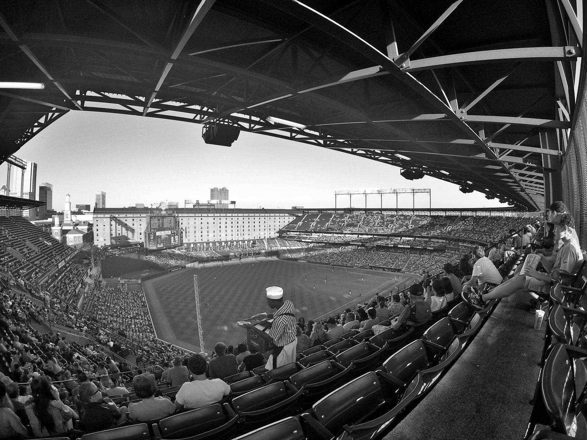

A hero returns to Baltimore
There is a special kind of energy that fills a stadium when a franchise cornerstone returns to the lineup. For the Baltimore Orioles faithful, nothing quite compares to the presence of Adley Rutschman behind the plate and in the batter's box. His recent return to Camden Yards was not just a standard game appearance; it was a statement performance that reminded everyone of his elite caliber.
The crowd greeted him with a thunderous standing ovation that echoed through the stands of the historic ballpark. This emotional homecoming set the stage for a night that would go down in the season's highlight reel. Every eye in the stadium was fixed on the catcher, waiting to see if the magic would follow his return to the home turf.
Power displayed at the plate
Rutschman did not disappoint the fans waiting for a spark. He wasted no time asserting his dominance over the opposing pitching staff. The highlight of the night came when he connected with two massive home runs, driving the ball deep into the outfield and sending the Baltimore crowd into a frenzy. Each swing seemed to carry the weight of his recent journey back to full strength.
The mechanics behind his two long balls were a masterclass in modern hitting. He showed incredible discipline early in the plate appearances before turning on pitches that left the defense helpless. These home runs were crucial for the Orioles' momentum, providing much-needed offensive production during a high-stakes matchup.
The roar of the Camden Yards crowd is unlike anything else in baseball, especially when Adley connects with the ball like that.
Key highlights from the game
The impact of Rutschman's performance extended beyond just the runs scored. His ability to control the game from behind the plate remained as sharp as ever, guiding the pitching staff through difficult innings. To summarize the key moments of his historic night, consider the following points:
Impact on the Orioles season
For the Baltimore Orioles, having a healthy and productive Rutschman is the difference between a good season and a championship contention season. His presence stabilizes the lineup and provides a psychological boost to the younger players on the roster. When the leader of the clubhouse is performing at a peak level, the entire team chemistry shifts upward.
The offensive surge provided by his two home runs also helps alleviate the pressure on the middle of the order. As the team continues to navigate the rigors of a long MLB schedule, having a reliable power threat in the catcher position is a luxury that few teams in the league possess. This performance serves as a blueprint for how the Orioles intend to finish their campaign.
Looking ahead to upcoming matchups
While the celebrations in Baltimore are well-deserved, the grind of the baseball season never stops. The Orioles will need to maintain this level of intensity as they face several divisional rivals in the coming weeks. The momentum gained from Rutschman's multi-home run night will be vital for maintaining their standing in the American League East.
Teams across the league are watching how the Orioles' core players respond to adversity and return to form. If Rutschman continues this trajectory, the rest of the league will have a difficult time containing this Baltimore offense. The focus now shifts to consistency and managing the pitching rotation to support this newfound offensive firepower.
More baseball analysis and news
Baseball is a game of momentum and shifts in player performance. Just as we saw Rutschman find his rhythm in Baltimore, other teams are dealing with their own highs and lows. For instance, if you are following the NL Central, you might be interested in how teams handle their young talent during tough stretches, much like how the Brewers Back Misiorowski After 25-Game Streak Ends vs Cubs.
Staying updated on these shifts is essential for any true fan of the sport. Whether it is a superstar returning to form or a rising prospect facing a reality check, the narrative of the MLB season is constantly evolving. Keep following our blog for more deep dives into the statistics and stories that define the world of professional baseball.
See Also
If you enjoyed this Baseball News article, check out Brewers Back Misiorowski After 25-Game Streak Ends vs Cubs for more useful reading.